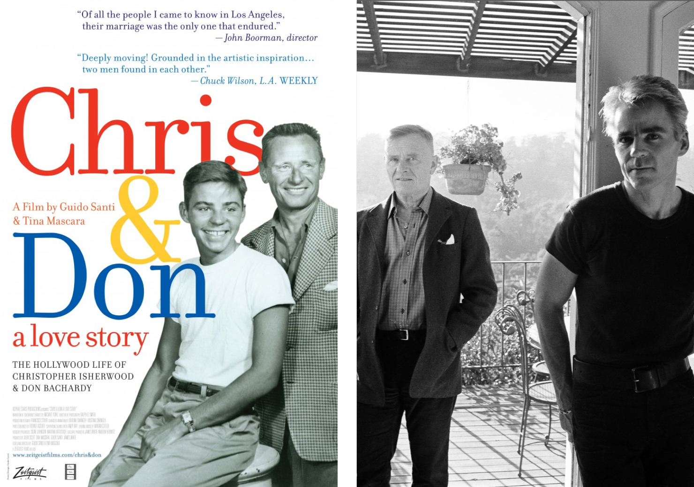

Cтатика, диалог двух персонажей. Фокус на равноправии. Равный фон стола до зрителя и фон после героев, симметричный формы стульев, педантично сложанные стопки книг.
Нет точного определения характеру связей персонажей, разность занимаемых поз не диктует явного определения социальных позиций.
Полутона в темпераментах. Опираясь на позы и направления голов видна большая заинтересованность в коммуникации со стороны персонажа - белого пятна
(белая рубашка, освещение из окна) при этом он в вольготной комфортной позe, у персонажа - темного пятна (в тени) интерес
направлен «в мир» и поза сдержанного ожидания.
Интерьер. Напряжение и интрига. В центре композиции соединяющим звеном двух человеко-доменант оказывается корзина фруктов с подозрительно явно направленными фаллическими формами банана, дополняют эту композицию початок кукурузы.
Эти атрибуты второстепенны и ненавязчивы, но факт их неуместного присутствия в строгом интерьере 60-x нельзя назвать незначительным.
Деконструкция содержания
Поиск языка, ключей к смыслу, контекста
Работа Сhristopher Isherwood & Don Bachardy относится к «Калифорнийскому периоду», когда Хокни называют английским Энди Уорхолом.
Хокни сочетает «театральность» минимализма и плоскостность формалистской абстракции... поддерживает идею свободы от культурного и исторического балласта, критикой мифа об аристократизме.
«Что по-настоящему плоско в природе? Ничего. Поэтому изображения — это во многом абстракция».
Впервые в западном искусстве были открыто показаны однополые пары. Написаны просто, с достоинством, «matter-of-fact». Хокни изобразил скрытую запретную любовь как нечто обыденное и простое.
Деконструкция образа
Крис и Дон. Первая открытая гомосексуальная пара Голливуда.
Героями картины являются друзья Хокни, однополая пара: англо-американский писатель Кристофер Ишервуд и художник-портретист Дон Бакарди.
В 48 лет Ишервуд встречает 18-летнего художника-портретиста Дона Бакарди и влюбляетсяя в него. Хотя общественность была шокирована значительной разницей в возрасте, их отношения оказались на редкость стабильными и долговременными: они прожили вместе 33 года, вплоть до самой смерти писателя.
Christopher Isherwood
Англо-американский писатель. Автор таких произведений как «Прощай, Берлин», на основе которого был снят фильм «Кабаре», «Одинокий мужчина», экранизированный Томом Фордом в 2009 и мемуаров «Кристофер и ему подобные».
Don Bachardy
Американский художник-портретист. Его работы находятся в постоянной коллекции Метрополитен-музея в Нью-Йорке. Одной из самых известных работ художника является официальный портрет губернатора Калифорнии Джерри Брауна.
В 1970-х годах писатель превратился в видного международного борца за признание прав сексуального меньшинства, одним из первых открыто заявив о своей гомосексуальности.

В 2007 году был снят документальный фильм «Крис и Дон. История любви».
Фильм получил хорошие отзывы критиков и совпал с решением Верховного суда штата Калифорния об отмене запрета на однополые браки.